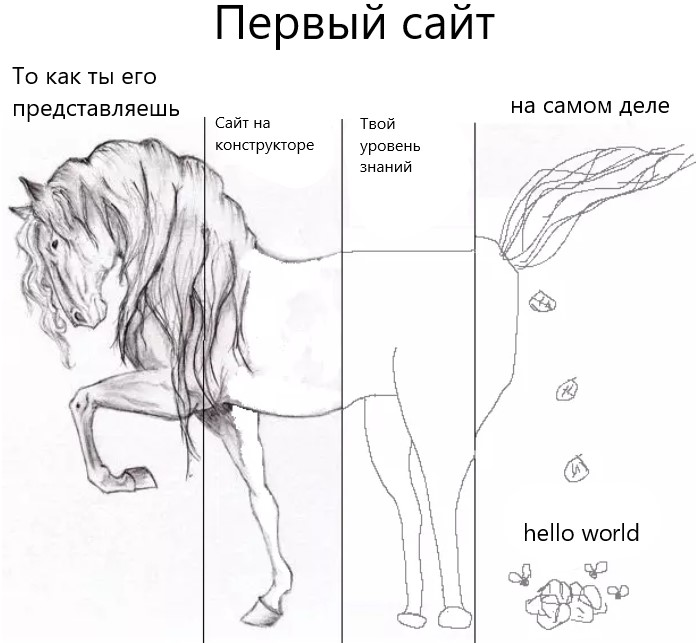

 Ло́шади (лат. Equus) — единственный современный род семейства лошадиных (Equidae) отряда непарнокопытных.Кладистический анализ, основанный на черепных и посткраниальных элементах (30 таксонов, 129 признаков), поддерживает монофилию рода Equus и отрицает признание родов Plesippus и Allohippus, поддерживает происхождение пустынной зебры (Equus grevyi) и членов клады зебры/осла от европейских лошадей Стенона. Недавние результаты исследования генома подтверждают монофилию рода Equus и указывают на его возникновение около 4,0—4,5 млн лет назад
Эволюционная история
Эволюция лошадей хорошо документирована ископаемыми остатками, свидетельствующими о том, как небольшое, размером с собаку лесное животное пропалеотерий, обладавшее пальцами вместо копыт, за 50 миллионов лет превратилось в крупных копытных обитателей открытых пространств. Основное видообразование происходило в пределах Северной Америки, откуда по существовавшему естественному мосту происходило их проникновение в Евразию, когда это было возможно в отсутствие Берингова пролива и до образования мощного ледникового щита.Эволюция лошадей началась в эоцене, около 55 миллионов лет назад. В то время существовал гиракотерий — предок всех нынешних лошадей, маленький зверёк с высотой в плечах всего 20 см, разжёвывавший своими мелкими зубами листья и фрукты. Гиракотерий нисколько не напоминал сегодняшних лошадей. У этого зверька были выгнутая спина, короткая шея и морда, короткие лапы и длинный хвост. Это было коренастое существо размером с лисицу, с четырёхпалыми конечностями. Череп и объём мозга были относительно малые.Около 50 миллионов лет назад из гиракотериев выделился род Orohippus (орогиппус). Прежде всего, изменились конечности и зубы, орогиппус предпочитал более твёрдую растительную пищу. Три миллиона лет спустя орогиппусы эволюционировали в новый род Epihippus (эпигиппус). Тем временем климат существенно изменился, в Северной Америке стало засушливее, леса сократились, уступая место открытым саваннам. Это было ключевым событием в эволюции лошадей, так как они были вынуждены приспосабливаться к новым условиям. Они стали крупнее, что позволяло им быстрее передвигаться, а также полностью переключились на травяную пищу.40 миллионов лет назад сформировался род Mesohippus (мезогиппус). Высота в холке у этой лошади была около 60 см, спина более не была выгнутой, как у её предков, а лапы, шея и морда стали длиннее. Изменилось также строение его копыт. Около 35 миллионов лет назад он перешёл в род Miohippus, представители которого стали ещё больше, а их морды дополнительно вытянулись.23 миллиона лет назад возник род Parahippus. У этого зверя были более приспособленные зубы и всего лишь по три имеющих копыта пальца. Потомками парагиппусов стали представители рода Merychippus (мерикгиппус), в холке достигавшие до одного метра. Их череп уже напоминал череп современных лошадей, а объём мозга значительно увеличился. Род Merychippus (мерикгиппус) разделился на несколько эволюционных линий, некоторые из которых вымерли. После промежуточного звена под названием Dinohippus около 4,4—4,5 млн лет назад, по данным генетиков, появилась линия Equus, породившая всех современных лошадей, зебр и ослов. Около 2,5 млн лет назад представители рода Equus переправились из Америки через Берингию в Евразию. На Ближнем Востоке Equus стали ослами, онаграми и собственно лошадьми (Equus caballus), в Центральной Африке — зебрами.Линия, ведущая к современным одомашненным лошадям (DOM2) ответвляется по геномным данным от линии лошади Пржевальского 43,8 тыс. л. н., а от линии ленской лошади (Equus lensensis) — 118,6 тыс. л. н. Вымершая линия Equus lenensis распространилась в Южную Сибирь. После анализа графика основных компонент (PCA), филогенетической и f3-аутгрупповой кластеризации, выяснилось, что образец MerzlyYar_Rus45_23789 из Республики Тыва (урочище Мёрзлый Яр на западе Тоджинской котловины в верховьях реки Большой Енисей (местное название Бий Хем)) возрастом 24 000 л. н. несёт чрезвычайно расходящуюся митохондриальную ДНК, обнаруженную только на Новосибирских островах возрастом около 33 200 лет назад. В Северной Америке лошади вымерли к середине VI тысячелетия до н. э., прежде чем в ходе европейской колонизации в XVI веке туда снова были ввезены представители видов домашняя лошадь и осёл. Одичавшие популяции ввезённых лошадей стали известны как мустанги. Подобный процесс имел место также в Австралии, в которой до этого никогда не было представителей рода лошадей.
Факоты
Средний срок жизни лошади составляет около 25-30 лет. Лошади умеют распознавать эмоции в человеческом голосе. Вторичная функция лошадиных копыт — насос, которые качает кровь вверх по кровеносным сосудам, когда лошадь наступает на землю. У более чем двух десятков народов лошадь считается священным животным.